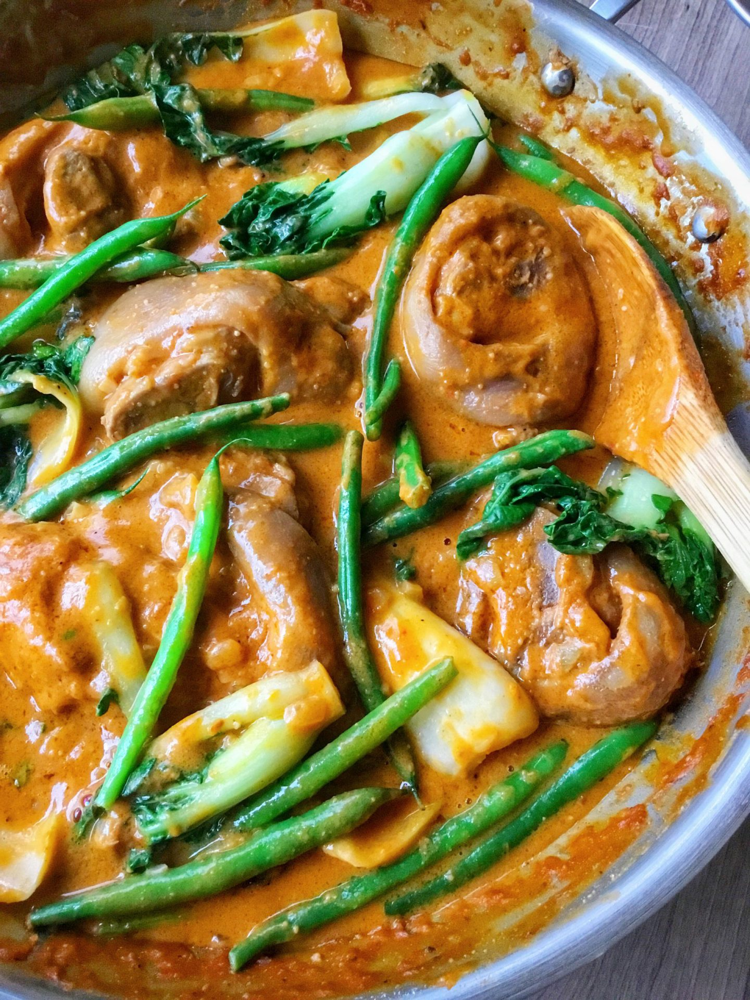

Home
Kare Kare

Description
A Filipino stew made with oxtail, baby bok choy, string beans, and eggplant. The sauce is made with a peanut butter base that makes it slightly sweet.
This dish may sound strange, but the flavors work really well together!
Ingredients
- 3 lbs Oxtail
- Baby bok choy
- String beans
- Eggplant
- 1/4 cup Shrimp paste
- 1 cup Peanut butter
- Kare kare powder
- 1/4 cup Rice flour
- 6 cups of water
Steps
- Add oxtail and water to a pot
- Bring to a boil
- Lower heat and simmer for three hours
- Add vegetables
- In a separate bowl, add kare kare powder and rice flour
- Add water until a paste is formed and add to pot
- Add peanut butter
- Add shrimp paste
- Cook until vegetables until fork tender